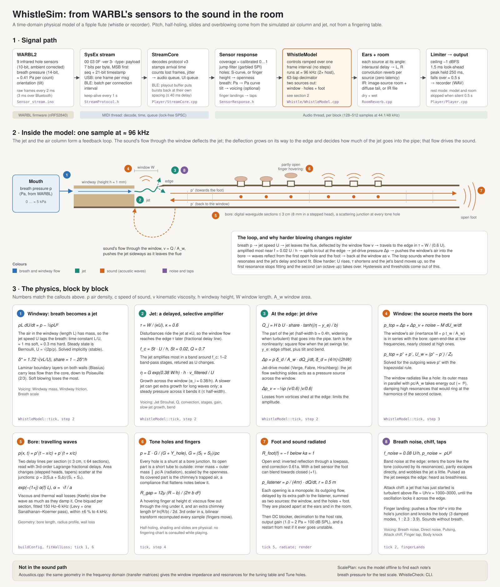

A whistle you play on a WARBL2
WhistleSim simulates a tin whistle or a recorder from WARBL2's raw sensor readings. It plays no samples and uses no fingering chart: pitch, tone and response come out of the physics.
WhistleSim simulates a tin whistle or a recorder from WARBL2's raw sensor readings. It plays no samples and uses no fingering chart: pitch, tone and response come out of the physics.
Latest version on GitHub. macOS 12 or newer, Windows 10 or newer (x64), Linux x86_64 (glibc 2.39 or newer). Free and open source (GPL v3). An iPhone and iPad app is on its way.
Needs a WARBL2 with firmware 4.8 or later. No WARBL? The app has a built-in simulated player. Getting started →
WARBL2 sends WhistleSim what its sensors read, about 500 times a second: how far each tone hole is covered, the breath pressure, and how the instrument is held. WhistleSim then simulates the instrument: the breath through the windway, the air jet swinging across the edge, the sound travelling up and down the bore, and each hole as open, covered or anywhere in between. So the things that make a whistle a whistle work as they do on a real one.
Partly covered holes bend the pitch smoothly. Lift a finger slowly and the note glides.
Blow harder for the second octave and harder again for the third, with the breaks where the bore puts them.
Soft notes are rounder and hard ones brighter, with breath noise and a little chiff on tongued attacks.
Whistles and recorders in several styles come built in. Change the bore, the holes, the windway and the jet, and save your designs as files to share.
The app places the holes so the notes play in tune at your breath, in equal temperament, meantone, just intonation or a tuning chosen for your keys. A needle tuner is built in.
Play in a small wooden room, a studio, a concert hall or a stone church, or load your own impulse response.

WhistleSim is free software under the GPL v3. The source, the release notes and the bug tracker are on GitHub.